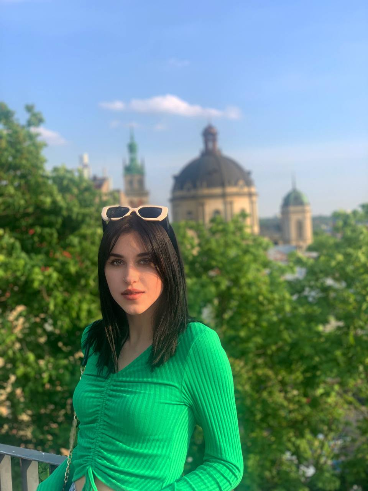

Добрий день , Everybody, познайомимось ближче?
Мене звати Кімак Аня, я з чудового міста Херсон!
Нажаль моє місто зараз окуповане, але кожен херсонець не втрачає надії та чекає якнайшвидшего звільнення.

Ще з раннього дитинства я була знайома з дизайном.
Спочатку я ходила в дитячу художнью школу. Потім навчання в дизайн лицеї
Далі запланованим шляхом опинилась в ХНТУ на кафедрі дизайну, за спеціальністю графічний дизайн.
Зараз я опинилась в файному місті Львів :) , та навчаюсь в ЛНАМ на графічному дизайні.
Навчаючись тут , я поставила мету : вивчати веб дизайн.
Вважаю це цікавим і корисним у майбутньому.
Також для мене важливо поглиблитись в ілюстрацію та вивчати проектування.


Подорожування завжди було чимось особливим для мене.
Мені подобається вивчати культуру,традиції та історію інших країн.
Щиро сподіваюсь , що після війни, ця мапа доповниться.
Якщо далі говорити про мої хоббі, я можу виділити декілька найцікавіших для мене:
- Світлина. Цим я захоплююсь з дитинства. В дизайн ліцеї я почала вивчати ази професійної зйомки.
Зараз, мій фотоапарат використовується часто. Мені подобається робити цікаві знімки, особливо фотографуючи людей в прикольних образах.
В майбутньому планую розвинути навичку світлини.
- Також мені дуже подобається волейбол.
Раніше я брала участь у змаганнях або просто насолоджувалася проведенням часу під час ігри з друзями.
- Вивчення іноземних мов я можу також віднести до моїх улюбленних хобі.
Мої контакти:
INSTAGRAM
TELEGRAM